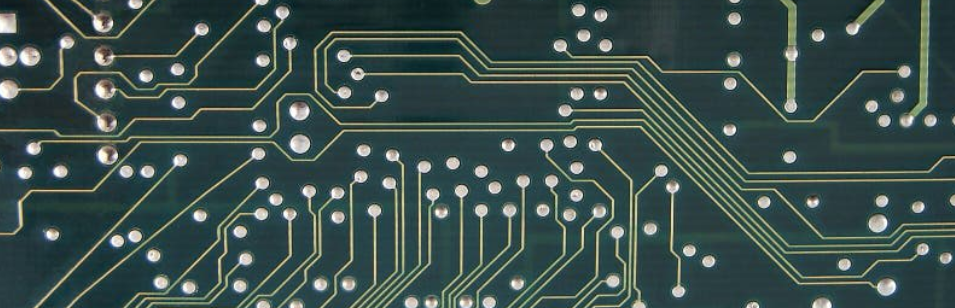

Wat is gegevenstransport?
Wat is gegevenstransport?
Het verplaatsen van informatie van A naar B.
Stel je voor dat je een WhatsApp-bericht naar je vriend stuurt. Dat bericht moet van jouw telefoon naar de telefoon van je vriend reizen. Het kan via wifi of 4G, soms gaat het via verschillende servers en routers, en uiteindelijk komt het aan. Als één stap niet goed verloopt, komt het bericht verkeerd aan of helemaal niet. Computers doen hetzelfde, maar dan duizenden keren per seconde.
Kan je een voorbeeld geven uit je iegen app-wereld waar data snel of foutloos moet aankomen, en wat er fout loopt als dit niet gebeurt?
Data opgedeeld
Bits
Een bit is de kleinste eenheid van digitale informatie: een 0 of een 1.
Alles op een computer (tekst, foto, video, geluid) wordt uiteindelijk vertaald naar reeksen van bits.
Pakket
Een stukje van een groter bestand, zoals een video die in stukjes wordt verstuurd.
Een pakket is een verzameling bits die samen een klein deel van een bestand of bericht vormen. Computers splitsen grote bestanden op in pakketten zodat ze sneller en betrouwbaarder kunnen worden verzonden.
Een pakket bestaat uit minstens 2 delen:
Payload
De eigenlijke data die het pakketje vervoert.
Dit kan een stukje van een video zijn, een fragment van een bestand, of een stukje tekst in een chat.
Header
De header van een datapakket bevat belangrijke informatie over het pakket:
- Waar het naartoe moet (IP-adres, poortnummer)
- Volgorde van het pakket (zodat de ontvanger ze correct kan samenvoegen)
- Eventueel type data of instructies voor foutcontrole
Zoals het adres op een envelop, zo weet de postbode waar hij het heen moet brengen.
Overzicht
| Term | Betekenis |
|---|---|
| Bit | Kleinste eenheid digitale info: 0 of 1 |
| Pakket | Verzameling bits, deel van een bestand |
| Pakket: Header | Informatie over bestemming, volgorde en type data |
| Pakket: Payload | De eigenlijke data die het pakket vervoert |
Systeembus
Alles wat je doet op een computer of laptop gaat via “digitale snelwegen”: de bus van het moederbord. Stel je voor dat je laptop een mini-stad is, met wegen, verkeerslichten en voertuigen.
Waar zitten ze?
De bussen zitten ingebakken in het moederbord zelf.
Ze verbinden bijvoorbeeld:
- CPU ↔ RAM (meestal via de front-side bus of moderne DMI/PCIe lanes)
- CPU ↔ uitbreidingskaarten (via PCIe-bussen)
- CPU ↔ opslagapparaten (via SATA of NVMe PCIe lanes)
Op het moederbord zijn het dunne koperbaantjes die over het PCB (de groene printplaat) lopen. Ze lijken op kleine lijntjes die van het ene component naar het andere gaan.

De verschillende bussen
- Data-bus:
De snelweg waar bits over rijden (de eigenlijke info). - Adres-bus:
Verkeersborden die aangeven naar welk huis (geheugenadres) een bit moet. - Control-bus:
Verkeerslichten en verkeersregels, bijvoorbeeld: “CPU, stop met lezen, RAM mag nu schrijven”.
Voorbeeld:
Je speelt een nummer op je computer of gsm. De CPU vraagt RAM om het bestand tijdelijk te bewaren. Bits reizen van opslag → RAM → CPU.
Serieel vs parallel transport
Bits kunnen op verschillende manieren over de bus reizen:
- Serieel transport: 1 bit tegelijk, zoals een smalle weg waar auto’s één voor één over moeten.
- Voordeel: betrouwbaar, minder kans op botsingen.
- Voorbeeld: USB-stick of Wi-Fi. Bits reizen een voor een van of naar de computer.
- Parallel transport: meerdere bits tegelijk, zoals een brede snelweg met meerdere rijstroken.
- Voordeel: sneller.
- Nadeel: als de weg te lang of te smal is, kunnen auto’s botsen.
- Voorbeeld: de data-bus van het moederbord, die RAM en CPU snel laat communiceren.
Serieel of parallel?
RAM-gebruik tijdens gamen?
Parallel
Surfen op internet?
Alles wat over internet gaat, wordt serieel verzonden via kabel of Wi-Fi.
Bluetooth gamecontroller?
Serieel draadloos
Cloud-sync apps (Google Drive, OneDrive, Nextcloud)?
Alles wat over internet gaat, wordt serieel verzonden via kabel of Wi-Fi.
Vuistregel
Kan je een vuistregel verzinnen om te bepalen welke data serieel en welke parallel worden verzonden?
- Alles wat via kabel of draadloos naar buiten gaat: serieel.
- Alles binnen de computer/smartphone zelf: meestal parallel.
Gegevenstransport buiten de computer
Wanneer data via een netwerk of het internet wordt verstuurd, gebeurt dit niet als één groot geheel. De informatie wordt eerst opgedeeld in kleine datapakketten. Elk pakket bevat een stukje van het oorspronkelijke bestand en kan apart worden verstuurd.
Router
Een router is een netwerkapparaat dat datapakketten doorstuurt naar hun volgende bestemming.
De verkeersagenten van het internet:
Je kan een router vergelijken met een verkeersagent op een kruispunt. Net zoals een verkeersagent beslist welke auto welke richting uit mag, beslist een router via welke route een datapakket verder moet reizen.
Wanneer je een foto verstuurt via WhatsApp:
- Je smartphone verdeelt de foto in meerdere datapakketten.
- Deze pakketten vertrekken via je wifi-router.
- Routers op het internet sturen de pakketten telkens door naar de volgende router.
- Uiteindelijk komen ze aan bij de server van WhatsApp.
Elke router kijkt naar het bestemmingsadres in de header van het pakket en beslist welke weg het pakket verder moet volgen.
Server
Een server is een computer die diensten of gegevens aanbiedt aan andere computers op het netwerk.
Het postkantoor van het internet:
Net zoals een postkantoor pakketten tijdelijk bewaart, sorteert en verder verdeelt, kan een server:
- Datapakketten ontvangen
- Gegevens opslaan
- Pakketten doorsturen naar andere computers
Kan je voorbeelden geven van servers en welke taken ze uitvoeren?
- Instagram servers bewaren foto’s en video’s.
- Spotify servers sturen muziek naar je toestel.
- Game servers verbinden spelers met elkaar in een online spel.
Verschillende routes voor verschillende pakketten
Datapakketten hoeven niet altijd dezelfde route te volgen.
Je kan dit vergelijken met pakketjes die via verschillende wegen naar hetzelfde huis worden gebracht. Als er ergens file is, kan een pakket een andere weg nemen.
In een netwerk kan dit bijvoorbeeld gebeuren wanneer:
- Een netwerkverbinding tijdelijk druk is
- Een router overbelast is
- Een kortere route beschikbaar wordt
Hierdoor kan het gebeuren dat:
- pakket 1 via route A reist
- pakket 2 via route B reist
- …
Wanneer alle pakketten aankomen bij de bestemming, zet de computer ze opnieuw in de juiste volgorde zodat het oorspronkelijke bestand weer correct wordt opgebouwd.
Ik dacht dat data over het internet altijs serieel werd verzonden?
Het lijkt tegenstrijdig, maar dat komt omdat serieel transport en verschillende routes op het internet over twee verschillende niveaus gaan.
Serieel transport: hoe bits fysiek worden verstuurd:
Wanneer we zeggen dat moderne verbindingen serieel zijn, bedoelen we dat de bits één voor één over een verbinding worden gestuurd.
Bijvoorbeeld bij:
- Ethernet
- Glasvezel
- Wi-Fi
Daar worden bits dus na elkaar verstuurd: 1 → 0 → 1 → 1 → 0 → 0 → 1.
Dus op één kabel of verbinding gaan de bits sequentieel (achter elkaar).
Datapakketten: hoe informatie wordt georganiseerd:
Voordat data verstuurd wordt, wordt een groot bestand eerst opgedeeld in pakketten.
Een video kan worden opgesplitst in:
- Pakket 1
- Pakket 2
- …
Elk pakket bevat:
- Een header (adres en info)
- Een payload (stukje van de video)
Die pakketten worden daarna via het netwerk serieel verstuurd.
Hoewel de bits binnen één verbinding serieel worden verstuurd, kunnen verschillende pakketten via verschillende routes door het internetreizen.
Waarom?
Omdat het internet uit heel veel routers en verbindingen bestaat. Routers kiezen telkens de beste volgende stap.
Samengevat:
Serieel transport
- Gaat over hoe bits over een verbinding reizen
- Bits worden één voor één verstuurd
Netwerkroutes
- Gaat over hoe pakketten door het internet bewegen
- Verschillende pakketten kunnen via verschillende routes reizen
Deze twee ideeën bestaan tegelijk, maar op verschillende niveaus van de communicatie.
Netwerkprotocollen
Om ervoor te zorgen dat al deze processen correct verlopen, gebruiken computers netwerkprotocollen.
Een protocol is een set afspraken of regels die bepalen hoe computers met elkaar communiceren.
Je kan dit vergelijken met taalregels in een gesprek. Als twee personen dezelfde taal spreken en dezelfde regels volgen, begrijpen ze elkaar. Computers hebben ook zulke regels nodig.
Een van de belangrijkste protocollen op het internet is TCP/IP.
Het TCP/IP protocol
TCP/IP staat voor:
- Transmission Control Protocol (TCP)
- Internet Protocol (IP)
Deze twee protocollen werken samen om datapakketten correct te versturen.
IP (Internet Protocol) zorgt voor:
- Het adresseren van computers op het netwerk
- Het bepalen waar een pakket naartoe moet
Elke computer op het internet heeft een IP-adres, vergelijkbaar met een huisadres.
TCP (Transmission Control Protocol) zorgt voor:
- Het opdelen van data in pakketten
- Het controleren of alle pakketten aankomen
- Het opnieuw samenstellen van de pakketten in de juiste volgorde
Als een pakket verloren gaat, vraagt TCP automatisch om het pakket opnieuw te versturen.
HTTP (HyperText Transfer Protocol)
HTTP is het protocol dat gebruikt wordt om webpagina’s van een webserver naar een browser te sturen.
Wanneer je een website opent, vraagt je browser de inhoud van de website op bij een server via HTTP.
Hoe werkt het?
- Je typt een website in de browser, bijvoorbeeld
meneermaes.be. - De browser stuurt een HTTP-request naar de webserver.
- De server stuurt een HTTP-response terug met de webpagina.
- De browser toont de HTML, afbeeldingen en andere inhoud.
HTTP is niet versleuteld, dus in theorie kan iemand op hetzelfde netwerk de data onderscheppen.
HTTPS (HyperText Transfer Protocol Secure)
HTTPS is de veilige versie van HTTP.
Het werkt hetzelfde, maar de verbinding is versleuteld.
Deze beveiliging gebeurt met behulp van TLS (Transport Layer Security).
De versleuteling zorgt ervoor dat:
- Niemand de inhoud van de communicatie kan lezen
- Niemand de data onderweg kan aanpassen
HTTPS wordt gebruikt bij websites waar privacy belangrijk is, zoals:
- Online bankieren
- Webshops
- Sociale media
- E-maildiensten
Je kan HTTPS herkennen aan:
- Een slotje in de browser
- Een adres dat begint met
https://
Wat gebeurt er technisch?
- Browser en server maken een beveiligde verbinding.
- Ze wisselen encryptiesleutels uit.
- Daarna wordt alle communicatie versleuteld verstuurd.
Het DNS (Domain Name System) protocol
DNS zorgt ervoor dat domeinnamen worden vertaald naar IP-adressen.
Voorbeeld:
- Wanneer je typt:
meneermaes.be - Moet de computer eerst weten welk IP-adres daarbij hoort, bijvoorbeeld:
142.250.74.14DNS zorgt voor die vertaling.
DNS werkt een beetje zoals de contactenlijst in een smartphone.
Je onthoudt de naam Mama, maar de telefoon weet dat het nummer bijvoorbeeld 0475 12 34 56 is.
Zo onthouden mensen websitenamen, terwijl computers werken met IP-adressen.
Foutdetectie
Tijdens het transport van data kunnen fouten optreden. Dit kan bijvoorbeeld gebeuren door:
- Storing op een kabel
- Interferentie bij draadloze verbindingen
- Overbelasting van het netwerk
- Hardwareproblemen
Daarom gebruiken computers verschillende methodes voor foutdetectie. Hiermee kan de computer controleren of de ontvangen data nog correct is.
Parity bits
Een parity bit is een eenvoudige methode om fouten te detecteren.
Bij deze methode wordt aan een reeks bits één extra controlebit toegevoegd.
Deze controlebit zorgt ervoor dat het aantal 1-bits:
- Even is (even parity)
- Of oneven is (odd parity)
Voorbeeld:
- Data:
1011001 - Aantal 1’s = 4 (even)
- Bij even parity voegen we een 0 toe zodat het aantal 1’s even blijft.
- Verzonden data:
10110010 - Wanneer de ontvanger de data ontvangt, telt hij opnieuw het aantal 1’s. Als het aantal niet klopt, weet de computer dat er een fout in de transmissie is gebeurd.
Parity kan fouten detecteren, maar meestal niet corrigeren.
Checksums en CRC
Voor grotere hoeveelheden data worden complexere controles gebruikt.
Voor het verzenden:
- Wordt een wiskundige berekening uitgevoerd op de data.
- De uitkomst van deze berekening wordt meegestuurd met het datapakket.
Wanneer de ontvanger het pakket ontvangt:
- Voert hij dezelfde berekening opnieuw uit
- Vergelijkt hij de uitkomst met de meegestuurde waarde
- Als beide waarden niet overeenkomen, betekent dit dat de data onderweg veranderd is en dat het pakket opnieuw moet worden verzonden.
Foutdetectie wordt voortdurend gebruikt in het dagelijks gebruik van technologie:
- Bij het streamen van video’s (YouTube, Netflix)
- Bij het downloaden van bestanden
- Bij online gaming
- Bij wifi-verbindingen
- Bij bestandsoverdracht tussen computers
Dankzij foutdetectie kunnen computers controleren of de ontvangen data nog correct is en indien nodig automatisch een nieuw pakket aanvragen.
Kort samengevat
| Routers | Sturen datapakketten door naar hun volgende bestemming, zoals verkeersagenten. |
| Servers | Slaan data op en verdelen deze verder, zoals postkantoren. |
| Datapakketten | Kunnen verschillende routes volgen maar worden bij de bestemming opnieuw correct samengesteld. |
| Protocollen | Bepalen hoe data wordt verzonden en gecontroleerd. |
| Foutdetectie | Zorgt ervoor dat fouten tijdens het transport worden opgespoord. |
Created: 02/03/2026